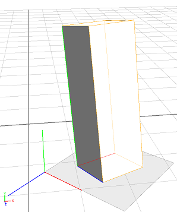

convert function
float convert(coordinate, fromSystem, toSystem, type, x, y, z)
float[] convert(fromSystem, toSystem, type, coordinates)
coordinate selector
| x, y, z | Coordinate component to convert. |
fromSystem selector
| scope, pivot, object, world | Coordinate system from which to convert. |
toSystem selector
| scope, pivot, object, world | Coordinate system to which to convert. |
type selector
| pos, orient | Interprets the tuple or array either as a position or as orientation angles. |
x, y, z float
coordinates float[] Position coordinates or orientation angles in degrees in fromSystem, to be converted to toSystem.
Returns the selected coordinate component of the tuple (x, y, z), or the full coordinates array, converted from fromSystem to toSystem. The coordinates can describe either angles or a position.
The convert function converts positions and orientations between different coordinate systems.
Related
Example

Init -->
extrude(3)
t('0.2, 0, '0.7)
s('0.5, '1, '0.5)
r(-10, 70, 0)
// position of scope origin in world coordinates
print(convert(scope, world, pos, [0,0,0]))
// (3)[1.0452611297369,0,2.183733612298965]
// x-position of scope origin in world coordinates
print(convert(x, scope, world, pos, 0, 0, 0))
// 1.0452611297369
// position of scope origin in pivot coordinates
print(convert(scope, pivot, pos, [0,0,0]))
// (3)[0.3999996185302735,0,-0.6000001430511476]
// orientation of scope origin relative to world axes
print(convert(scope, world, orient, [0,0,0]))
// (3)[-10,23.45978546142578,0]
// position of scope center in world coordinates
print(convert(scope, world, pos,
[scope.sx/2,scope.sy/2,scope.sz/2]))